Mt. Holly Estate · personal reference · patch 1.7.1 era
The Mount Holly
Dossier
The drafting engine as it actually works, the odds behind it, the routes, and the answers. Search finds anything. Compact mode strips the prose and leaves the tables. Checkboxes remember themselves.
Start here
How this is organised
Speed Day One / Room 46, fast. → V-Mode → Day 1 routes → Speed.
Bingo Many objectives across a save. Pool control is the skill. → Draft engine → Dynamic rarity → Odds desk.
Mid-run Turn on Compact mode (top left). Same content, tables and images only, no essays.
Trusting this page. Numbers here are datamined and published. Unverified things sit in UNVERIFIED boxes; where two sources disagree there's a SOURCES DISAGREE box. Both are collected in Gaps.
Sources: TFMurphy and Borelaum_Studios' datamining · blueprince.wiki.gg · "Mastering Day One Trophy" by nirinirino (duck), patch 1.7.1, with a speedrun segment by z4mdogg · your V5 cheat sheet.
assets/rooms/<RoomName>.png, PascalCase, no spaces (BilliardRoom.png, TheFoundation.png, UtilityCloset.png). Missing files fall back to a placeholder tile showing the filename it wanted, so you can see exactly what to drop in.
Cheat sheet
V5 · the whole thing, at size

Scroll to pan. Everything below is the depth behind these tiles.
Codes
| Room | Code |
|---|---|
| Apple Orchard | 1128 |
| Drawing Room | 415 / 0415 |
| Drafting Studio | 811 |
| Office | 0303 |
| Study | 1208 / 0812 |
| Boudoir | 2512 / 1225 |
| Shelter | Day One, Nov 7 (with time) |
| Mechanarium | MAY8 · 8th door |
| Vault | Key 370 · Key 304 |
| Clock Tower | 01:30 |
| Reservoir | Black Moon by stone spike |
| Safehouse | Reservoir pump level 6 |
| Throne Room | Reclaim the crown |
| Music Room | Draft late |
Aries Court, by entry door, on the left
| Entry | Sequence |
|---|---|
| 1st | 332 1122 |
| 2nd | 69944 88822 |
| 3rd | 1444 5388 8882 |
| 4th | 3661 1556 12288 |
Reducing the reservoir by 1
- Push pump 1 & 2 up
- Press Greenhouse
- Press Reservoir
Fastest solve pulls steps (1) and (2) into Tank 1, fill from Greenhouse, then from Reservoir.
Gemstone cavern
6 5 4 3 2 1 → ALL GREEN
| 1 ×4 | 2 ×3 | 3 ×3 | 4 ×3 | 5 ×3 | 6 ×4 |
| 4 ×1 | 6 ×4 | 5 ×3 | 1 ×2 | 3 ×3 | - |
Contraptions
| Craft | Ingredients | Cost |
|---|---|---|
| Power Hammer | Sledge Hammer + Battery Pack + Broken Lever | Opens multiple routes to 46 |
| Burning Glass | Magnifying Glass + Metal Detector | Loses Detector |
| Detector Shovel | Shovel + Metal Detector | No Turnips |
| Dowsing Rod | Shovel + Compass | Loses both effects |
| Electromagnet | Compass + Battery Pack | - |
| Jack Hammer | Shovel + Battery Pack + Broken Lever | - |
| Pick Sound Amplifier | Lockpick + Metal Detector | Loses Detector |
| Lucky Purse | Coin Purse + Lucky Rabbit Foot | - |
Veteran Mode
The highest-leverage thing on day one
Activated only on Day One; affects the whole save file from then on. It's silent, nothing tells you it fired.
Triggers, any one
| Trigger | Window |
|---|---|
| Draft first 3 rooms | under 35 s |
| Draft first 4 rooms | under 50 s |
| Draft first 5 rooms | under 60 s |
| Open the Apple Orchard | ≤1 room drafted, no timer |
| Dig up the Conservatory (even if you decline) | ≤1 room drafted, no timer |
Dare and Curse have it on by default. Tell: Utility Closet / Garage / Billiard Room being offered early.
What it actually changes
| System | Change |
|---|---|
| Dynamic rarity ↑ | Billiard Room, Utility Closet, Boiler Room, Workshop → Common |
| Dynamic rarity reset | Resets rooms artificially suppressed on Day One Bequest, but not Pool (stays Unusual) or Study (stays Rare) |
| Forced Draw | Activates Garage's forced draw |
| Item luck | Base spawn bracket 18% → 23% |
| Item pool | Adds Compass and Magnifying Glass |
| Closet | Loses its guaranteed special item: 100% → 50% |
| Free-draw lockout | First 6 − day drafts → first 2 drafts |
| Gem deck gate | Early thresholds → 5/5/4/4 (the day-16+ / post-46 values) |
| Outer Room | Relaxes the tutorial rig, Tomb / Trading Post visible without a reroll |
Day One routes
Three locks, any order, all three required
Day One constants
- First draft is always Bedroom, Closet or Hallway, rotation is not fixed.
- Trunk in the Bedroom. Cloister is empty. Dinner is always Fish (Aquarium → +10).
- You start with 0 stars. Observatory earns 1 coin. Telescope isn't in the item pool if you don't start the day with stars.
- First-time-per-save, not day-one-specific: Security must be drafted from its centre door; the Garage trunk holds an Upgrade Disk.
The three locks
- Open an Antechamber door, any one of five rooms with an E/W/S lever.
- Reach Underground Cartside, Tomb, or Pump Room.
- Reach Underground Gearside, Pump Room, Foundation, or Power Hammer.
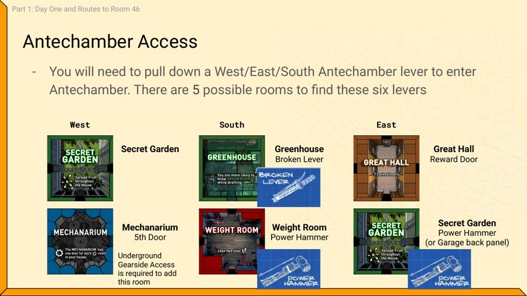
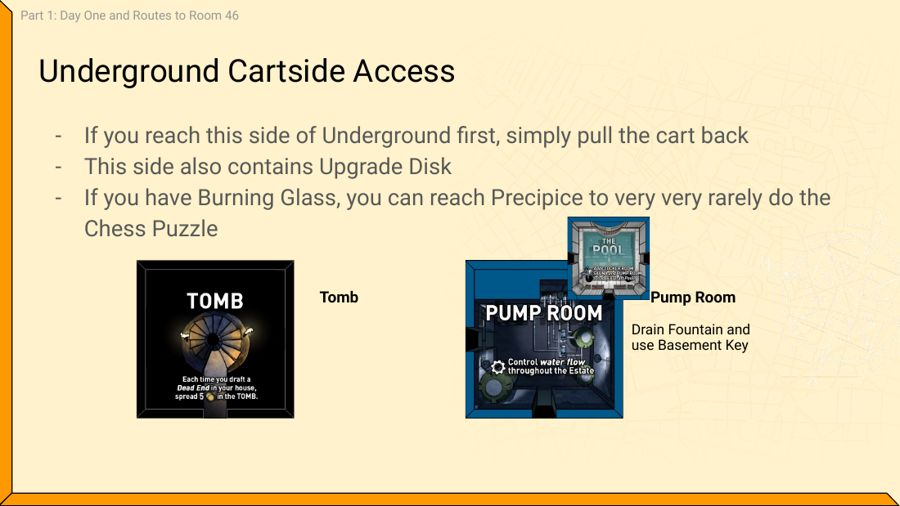
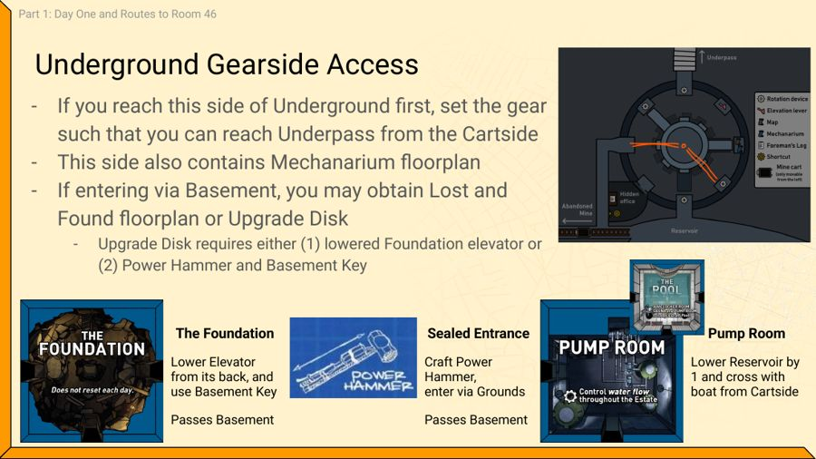
Antechamber, the five rooms
| Room | Side | How |
|---|---|---|
| Secret Garden | West · East | Immediate West lever. East lever too with Power Hammer, or via the Garage back panel. |
| Mechanarium | West | 5th door. Requires Underground Gearside access to add the room to the pool. |
| Greenhouse | South | Broken Lever. |
| Weight Room | South | Power Hammer. |
| Great Hall | East | Reward door. |
Alternative win, the Laboratory experiment
With the Satellite Dish unlocked, the Lab can offer an experiment that opens an Antechamber door outright. You need:
- Shovel, Hammer and a powered Lab → all 3 Microchips
- Burning Glass + 3 Microchips → Satellite Dish
- An "open Antechamber door" experiment with a trigger you can fire 4 times, you still need 4 even if you've already pulled levers
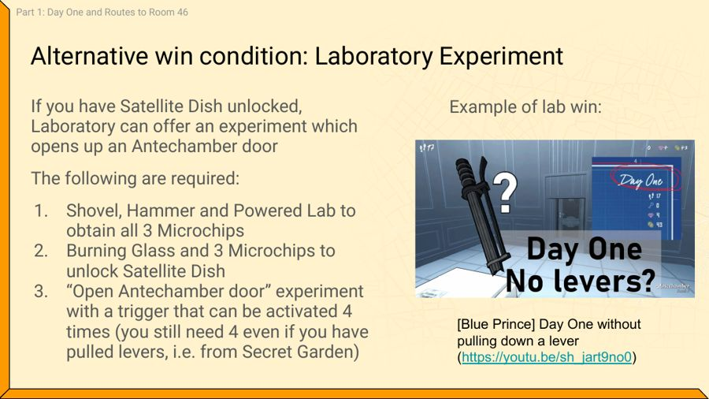
What actually wins, 100 games
Set win rate 36%. 15 runs die early, 14 die midgame, and 36 of the 71 that reach lategame convert.
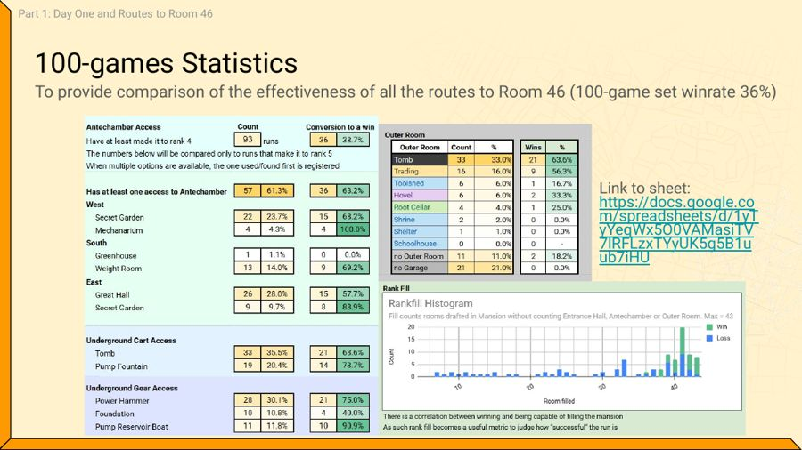
| Lock | Route | Picks | Wins | Rate |
|---|---|---|---|---|
| Antechamber | Great Hall | 26 | 15 | 58% |
| Secret Garden | 22 | 15 | 68% | |
| Weight Room | 13 | 9 | 69% | |
| Mechanarium | 4 | 4 | 100% | |
| Greenhouse | 1 | 0 | 0% | |
| Cartside | Tomb | 33 | 21 | 64% |
| Pump Room | 19 | 14 | 74% | |
| Gearside | Power Hammer | 28 | 21 | 75% |
| Reservoir Boat | 11 | 10 | 91% | |
| Foundation Elevator | 10 | 4 | 40% |
- Reservoir Boat is a near-guaranteed win (10/11), because getting it means you already hold both Underground accesses.
- Foundation Elevator is the trap (4/10). Hard to force, though the room itself is a good gemless 3-way.
- Mechanarium went 4/4. It's for runs with Gearside access already, a free 4-way with West lever access. Almost always worth taking.
- Great Hall is easy to find because drafting near a full house dries up the gemless pool fast.
- Greenhouse's value isn't the lever, it's that it enables Veranda to craft the Power Hammer.
Outer room: Tomb or Trading Post
Open the Outer Room as soon as possible, then look for Tomb or Trading Post, 63.59% to see one first round, 52.01% if a Greenhouse is active.
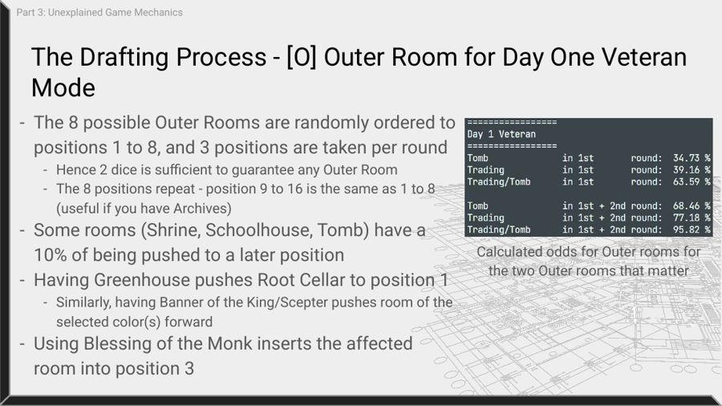
| Target | 1st round | 1st + 2nd round |
|---|---|---|
| Tomb | 34.73% | 68.46% |
| Trading Post | 39.16% | 77.18% |
| Either one | 63.59% | 95.82% |
Tomb, simpler, faster, cheaper on steps. Fewer keys overall means less agency, but you only need to hit one of three win conditions (Power Hammer, Pool, Foundation). Covers games with good shops, or where you already have the Secret Garden Key.
Trading Post, higher overall consistency (multiple shots at Silver Key, Secret Garden Key, Battery) but expensive step-wise, since it needs repeated backtracks. Wants a good exit from high ranks via the Garage. Best when low on keys.
If you miss both: Toolshed (immediate resource keeps runs alive) → Hovel (specifically for low-gem runs, but watch that you can't draft step-cost rooms like Nursery when too low) → Shelter (best for Boiler Room strats; lets you take Archives and Weight Room without punishment, and there's 1 gem in the safe).
Speed
Glitchless inheritance runs · z4mdogg's segment
PBs referenced: 10:32 Bequest% · 13:59 Cursed%.
The route
Secret Garden / Great Hall + Pool + Tomb
Great Hall has the higher ceiling; Secret Garden isn't slow and is preferred for Dare/Curse. Tomb + Pool skips the Basement entirely, which is where the time is.
Collect in order
- Picking up a unique special item for the first time each day plays an animation. Grab resources first (key, coin, gem), specials after.
- Or kill the delay by quickly opening and closing the Blueprints.
Items to ignore
- Upgrade Disks, Magnifying Glass, Vault Keys, Car Keys.
- Leave Workshop spawns (e.g. Battery Pack) on the table until you need to craft.
- Worth it: Running Shoes (movement, especially outside), Compass (fewer rooms needed to build a path).
Memorised solves
- Safes: 415, 1225, 812, most accept DD/MM and MM/DD both.
- Parlor solutions.
- Pump Room reservoir boat: fill tank 1 from Greenhouse, then from Reservoir.
- Gear puzzle: rotate the first gear 4 times for the fastest line to 46. Grab Mechanarium on the way back from Underpass if you need it.
Dartboard optimisation
The sides of the board have no collision hitbox, collect keys through the sides before the board finishes opening.
On Day One the dartboard is always 6 questions in the same pattern:
single → addition → subtraction → subtraction → multiplication → subtraction & multiplication
Answers are limited, so pre-position the cursor. Multiplication tends to give 12 or 20, near the top.
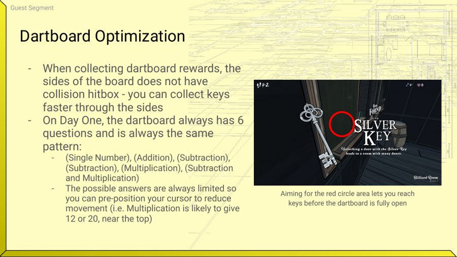
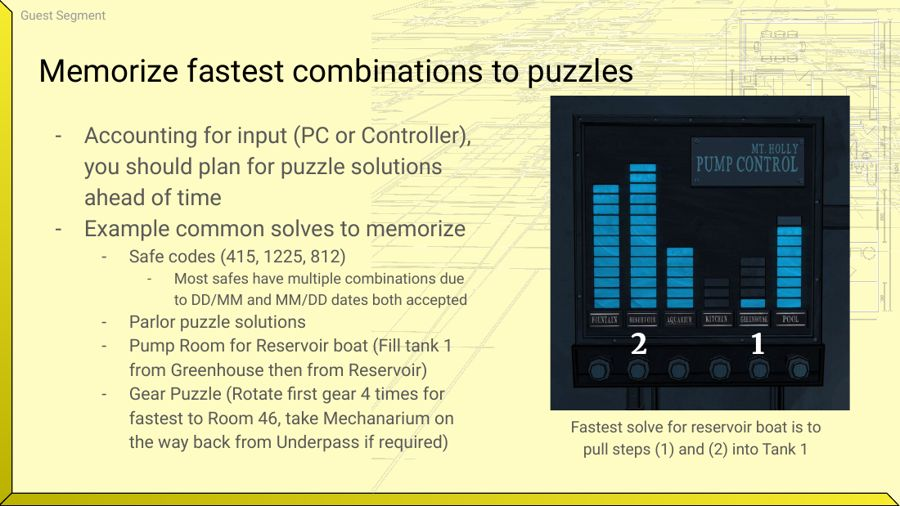
Day One checklist
Draft engine
What the game does when it shows you three doors
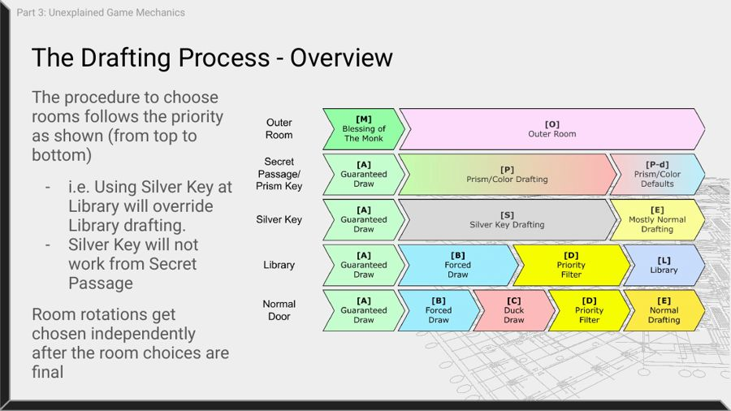
Draft pools are per-doorway
Not one pool. Every doorway has four (Common Free, Rare Free, Common Gem, Rare Gem), combined at draft time. The names only loosely match what's inside.
- Normal drafting uses the max of the four sizes; other draft types sum them.
- Drafting removes one copy from every pool containing it. The pool with fewest copies empties first.
- Duplicate hotspots: north into B9/D9 (Common Gem = Rare Gem), south into B1/D1 (Common Free = Common Gem). Both distort Silver/Prism behaviour.
- Chamber of Mirrors rooms aren't removed on draft, unless already on the estate.
Day One Bequest has the smallest pool in the game, no Found Floorplans, no Studio Additions unlocked. The more rooms you draft in a day, the easier the drained pool makes finding a specific one.
Guaranteed draws
| Condition | Result | Survives Silver Key? |
|---|---|---|
| Very first draft, Day 1 | Bedroom, Closet, Hallway | - |
| First draft after reaching Room 46 | Gift Shop → Slot 1 | Yes |
| Drafting from a Tunnel | Tunnel → Slot 1, not on redraws | Yes (and Prism) |
| Drafting from a Reading Nook | Library → Slot 3, repeats on redraws | Yes |
| Blessing of the Monk | Affected room → Outer slot 3 | - |
Ending Day 1 without drafting skips the forced Bedroom/Closet/Hallway.
Forced draws, "weighted rooms"
Four rooms only, forced into Slot 3, ignoring rarity, almost always on the first round of a draft. Only one can attempt per draft: the highest-priority one still in the current Exit List. Priority:
Conservatory → Garage → Morning Room → Utility Closet
| Room | Rate | Conditions |
|---|---|---|
| Conservatory | 15% | None. Highest priority, so its mere presence in the Exit List blocks all three below it. |
| Garage | 90% 92.5% | Day 3+ or V Mode. Slots 1 and 2 not both Dead Ends. Not already offered today. The rate is 90% while the West Gate is locked, 92.5% once unlocked. |
| Morning Room | 70% | West Pierce or East Pierce only. Never at West Retreat or East Advance. |
| Utility Closet | 20% | Day 2+, West Gate still locked, and the Garage already drafted today. Slots 1 and 2 not both Dead Ends. Not already offered today. |
- A higher-priority room blocks lower ones just by being in the pool, even if its own conditions don't apply.
- Already offered in slots 1–2? The roll still happens, then the draw fails anyway.
- A failed roll does not retry on redraws, but does retry at a new location.
- If a temporary restriction bars the room before the random chance is rolled, it can still try again on a redraw.
- A Weighted Room in Slot 3 is ignored by validation, so it will not be sorted into an earlier slot even if it is cheaper.
- Never appear from a Secret Passage, Prism Key, Silver Key or Berry. They do still appear from a Cloister of Draxus, because the Cloister only acts during validation.
- Garage and Utility Closet check the previous two rooms aren't both Dead Ends, only if Slot 2 was a normal draw.
Duct draws (a.k.a. duck draws)
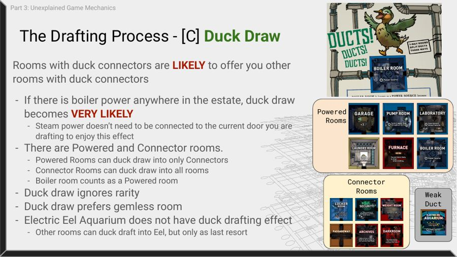
| State | Chance |
|---|---|
| First duct draw, activated Boiler Room anywhere on the estate | 70% |
| First duct draw, no activated Boiler Room | 25% |
| Every duct draw after the first | 30% |
| After three this draft | 0%, hard cap |
Power rooms: Garage, Boiler Room, Pump Room, Laboratory, Laundry Room, Furnace.
Connectors: Locker Room, Security, Passageway, Archives, Darkroom, Weight Room.
Special: Electric Eel Aquarium.
- Power room → only connectors can appear. Connector → anything.
- Slot 1 duct draw → only free duct rooms: Pump Room, Furnace, Archives, Darkroom, Weight Room.
- Selection is uniform. Rarity ignored entirely. Best Rare-duct engine in the game.
- Duct draws sum pool lists rather than taking the max, hence duplicate rooms in one Slot 3 draw when drafting north into B9/D9.
- Electric Eel Aquarium is rerolled out unless it's all that's left. It has no duct-draft effect of its own.
- Failed duct draw → normal draw replaces it, but still burns one of the three.
- Doesn't fire from a Berry blessing.
Priority filters
Each floorplan rolls to be accepted; the draw proceeds using only accepted ones. First attempt only. Multiple activations of the same filter in one day don't stack.
Rarity still technically matters, but the pool gets so pinched that rarity effects become negligible.
Colours 1.7
| Filter | Accepts | Rate | Also turned on by |
|---|---|---|---|
| Blue | every Blueprint | 40% | Was 50% before 1.7. Huge list plus a high rate means you will see almost nothing else. |
| Black | every Blackprint | 40% | — |
| Violet | Bedrooms | 28% | — |
| Orange | Hallways | 30% | — |
| Green | Green Rooms | 40% | Drafting a Greenhouse, from your next draft |
| Yellow | Shops | 30% | Was 25% before 1.7. Most shops cost gems, so it mostly affects Gem Draws |
| Red | Red Rooms | 30% | Drafting a Furnace, from your next draft |
Features and constellations
| Filter | Accepts | Rate | Turned on by |
|---|---|---|---|
| Classrooms | Classroom, Dormitory, Library | 35% | Drafting the Schoolhouse |
| Mechanical | Utility Closet, Boiler Room, Pump Room, Security, Workshop, Laboratory, Mechanarium, and Rotunda | 40% | Picking up a Powered Electromagnet. Drops when it leaves your inventory. |
| Tomorrow | Sauna, Coat Check, Mail Room, Freezer, Morning Room, Clock Tower, Planetarium | 40% | Picking up a Chronograph |
| Southern Cross | Rotunda, Passageway, Great Hall, Cloister, Archives, Weight Room, Vestibule | 40% | Viewing it at the Observatory |
| Draxus | Dead Ends, including the fakes: Garage, Chamber of Mirrors, Secret Passage, and Greenhouse even after its Dead End flag is gone | 30% | Viewing Draxus, the Dead at the Observatory |
Always active
| Filter | Rooms | Rate |
|---|---|---|
| Patio Filter | Patio, Veranda, Greenhouse, Morning Room, Secret Passage | 5%, or 50% from your next draft after a Greenhouse |
| Major Rarity Bump | Observatory, Commissary | 13% |
| Minor Rarity Bump | Garage, Classroom | 3%. Garage is pulled out on Days 1 to 4 unless V Mode is on. |
Normal drafting, filters, and the rarity gate
Free vs gem
- Slot 1 is always a free draw.
- Days 1–3: first
6 − daydrafts are all-free. V-Mode → just the first 2. - Slot 2 rolls for gem off rank and gems held. If it hits, Slot 3 becomes gem too. If not, Slot 3 rolls separately. Live numbers → Odds desk.
Filters
- Discard filter, drawn by normal drafting → out until its deck reshuffles. Rerolled rooms won't be offered again immediately.
- Runback filter, first round of a draft, rooms from the previous draft's last round may be filtered. Rolled once for the whole round:
| Rarity | Filtered out |
|---|---|
| Commonplace | 60% |
| Standard | 80% |
| Unusual | 90% |
| Rare | 99% |
- Doesn't apply to the first draft of the day.
- Secret Passage sets no filter, next draft starts clean. Prism Key does set it.
- Secret Garden Key, Key 8, and Berry Picker each run a hidden round that counts as "last round".
- West Path ignores it and doesn't even clear it.
The deck-size gate
Rarity is chosen first (day × rank × slot × Solarium), then the deck is size-checked:
| Group | Required size, Com / Std / Unu / Rare |
|---|---|
| Any free deck | 3 / 3 / 3 / 3 |
| Gem, V-Mode, post-46, or day 16+ | 5 / 5 / 4 / 4 |
| Gem, day 8+ | 4 / 4 / 3 / 3 |
| Gem, otherwise | 4 / 3 / 3 / 3 |
Too small → mark it, climb Commonplace → Standard → Unusual → Rare until one fits. Then pick uniformly at random among all marked decks with size ≥ 1.
Draw attempts
- Everything above.
- Same, minus priority filters. Fails outright if no deck is large enough.
- Shuffle the four decks (clearing the discard filter), repeat attempt 2 with the same rarity pick. Can't fail the size check.
- Draws a Closet. Unconditional. An inexplicable Closet means nothing passed filters.
The first attempt almost never finds a deck large enough, even with a colour filter on, which flattens the odds across every rarity that has passing floorplans.
Validation
Runs after all three draws, covering slots up to the last normal draw.
- Duplicates → earliest one rerolls as an Any Draw (with priority filter).
- Three Dead Ends → Slot 2 rerolls, dead ends banned. Exceptions: Cloister of Draxus, niche duct situations, and corners when you're out of 2-way bends.
- Cloister of Draxus → inverted: non-dead-ends reroll into dead ends.
- Slot 1 came out gem → reroll as a free draw. The first room always costs 0; if it would cost, the cost is bypassed.
- Sort by gem cost ascending, then stated rarity (most common first).
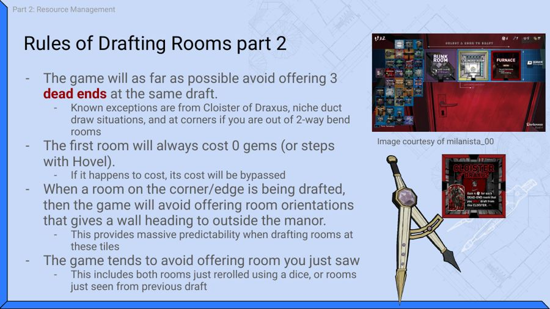
The other drafting procedures
Library
- Filters certain rooms out, notably you cannot find Furnace or Maid's Chamber.
- At 0 gems it offers two free rooms; otherwise two gem rooms. Mind this if you're hunting Study.
- Pulls from mostly Unusual and Rare, roughly 50:50.
- The only consistent way to find Foundation / Study / Attic on Day One.
Silver Key
- Ignores rarity. Tries 3-way or 4-way first, then 2-ways.
- Draft to an edge to force 3-ways.
- Pool is pinched: no dead ends, many 2-ways unavailable, and Foundation is removed. Locker Room counts as a 3-way. Gallery and Trophy Room are in the 2-way pool even on Day One.
- Prefers gemless rooms unless you hold 4+ gems.
- Empty silver pool → falls back to mostly normal drafting, gemless-first.
- Does not consume the Garage forced draw.
Prism Key / Secret Passage
- Prism drafting is jank. Known consequences:
- Can draft rooms not yet added to the pool, Morning Room, Casino, Solarium.
- Pulling green very likely gives a Slot 1 cost-bypassed gem room, since most greens cost gems.
- Can duplicate rooms already in the mansion if the pool is pinched.
- Can put 4-ways at edges and 3-ways at corners.
- Prism on an Aquarium → reselect colour by hovering in and out.
Dynamic rarity
The rarity that actually matters
Every room has an internal rarity separate from the one printed on the card. Most rooms are more common than they claim. Security, Courtyard and West Wing Hall are all Dynamic Common despite saying Standard.
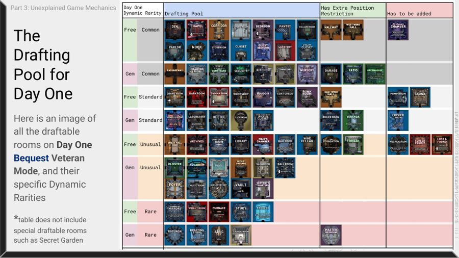
The first week, room by room
Empty cells mean no Dynamic Rarity is set, so the room falls back to its Base Rarity. Every one of these first-week changes is skipped entirely once you reach Room 46, or if V Mode is active.
| Room | Base | Day 1 | Day 2 | Day 3-4 | Day 5-7 | Day 8+ |
|---|---|---|---|---|---|---|
| Workshop | Unusual | Unusual | unset | unset | unset | unset |
| Commissary | Standard | Unusual | Commonplace | Commonplace | Commonplace | Commonplace |
| Darkroom | Standard | Unusual | unset | unset | unset | unset |
| Billiard Room | Commonplace | Unusual | Unusual | Standard | Standard | Standard |
| The Pool | Standard | Unusual | Unusual | unset | unset | unset |
| Drafting Studio | Rare | Rare | Rare | Unusual | Unusual | Unusual |
| Pump Room | Unusual | Rare | Rare | Standard | Standard | Standard |
| Coat Check | Standard | Rare | Rare | unset | unset | unset |
| Freezer | Rare | Rare | Rare | Unusual | Unusual | Unusual |
| Observatory | Standard | Unusual | Unusual | unset | unset | unset |
| Lavatory | Standard | Commonplace | Commonplace | unset | unset | unset |
| Archives | Unusual | Rare | Rare | unset | unset | unset |
| Ballroom | Unusual | Unusual | Unusual | Unusual | unset | unset |
| Library | Unusual | Rare | Rare | Rare | Standard | Standard |
| Laboratory | Standard | Unusual | Unusual | Unusual | unset | unset |
| Gymnasium | Standard | Unusual | Unusual | Unusual | unset | unset |
| Study | Unusual | Rare | Rare | Rare | Rare | unset |
| Master Bedroom | Rare | Rare | Rare | Rare | Rare | Unusual |
How to read the pool
- Commons are unavoidable. Approach Day One expecting to draft every single one eventually.
- When commons are spent, Standards appear at mid ranks. Standards hold multiple 3-ways, Gym, Chapel, Darkroom, Dining Room. This is when you branch liberally.
- Unusuals are infrequent, and hold the win conditions. Take them when you see the right ones.
- Gem Unusuals are much harder to see than Free Unusuals, you'll have emptied the free pool long before the gem pool.
- Do not plan around seeing any Rares.
What the shape of the pool does to your run
Impact 1, dead ends front-load
The Free Common pool is full of dead ends. The Free Standard pool is full of 3-ways. So the early game tests you on placing dead ends wisely without wasting doors; the midgame branches so freely that runs survive some waste.
Impact 2, gem economy is negative
More rooms take gems (Passageway, Security, Kitchen) than the free pool produces (Den, Parlor, Guest Bedroom). Hence: be picky about gem rooms, and Commissary sets that sell gems are much stronger than sets that don't.
Circumventing rarity entirely
- Duct draws, uniform, ignores rarity.
- Forced draws, ignores rarity.
- Silver Key, ignores rarity.
- Priority filters, pinches the pool until rarity is negligible.
- Prism Key / Secret Passage, reaches outside the pool entirely.
- Emptying commons, the gate does the rest.
Day One Upgrade Disks
- Disks don't affect rooms you've already drafted, except the Nursery. If you already have a Nursery, the +8 steps upgrade improves its +5 to +8; the other two upgrades delete your drafted Nursery's ability. Don't take them.
- Since 1.7, Day One Veteran disk logic avoids rooms you've already drafted, from the second disk onward, at 70%.
- Consequence: Aquarium, Mail Room, and Cloister get upgraded disproportionately, because they're rarely drafted early.
- Disks trade at Trading Post as a tier 4 item, the tier that includes the Secret Garden Key.
Odds desk
Live calculators on the published tables
| Rank | 4+ gems | 1-3 gems | No gems |
|---|---|---|---|
| 1 | 3.00% | 2.00% | 0.00% |
| 2 | 3.00% | 6.90% | 0.00% |
| 3 | 22.40% | 6.90% | 0.00% |
| 4 | 22.40% | 6.90% | 6.00% |
| 5 | 41.80% | 16.21% | 6.00% |
| 6 | 41.80% | 16.21% | 15.40% |
| 7 | 59.26% | 16.21% | 15.40% |
| 8 | 59.26% | 41.35% | 32.32% |
| 9 | 59.26% | 41.35% | 32.32% |
Cumulative chances. Each rank band is a separate roll that falls through to the next if it fails, which is why the numbers are not round.
Rare Check and gem draw, this round
Duct draws, how many will I get?
Outer room hunt, Day 1 Veteran
Rarity gate resolver
Enter surviving deck sizes. Assumes the initial rarity pick landed on Commonplace, then climbs.
Runback filter
A Rare you just passed on has a 1% chance of coming back next draft. Want it again? Don't run back, or use a Secret Passage, which leaves the filter empty.
Doors & area
The theory that decides runs
Terminology
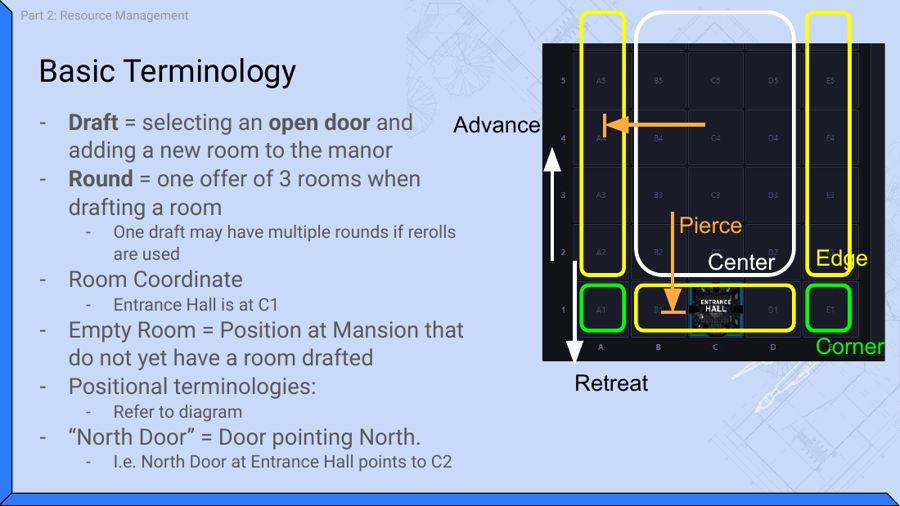
| Term | Meaning |
|---|---|
| Draft | Selecting an open door and adding a room |
| Round | One offer of 3 rooms. A draft can have several rounds if you reroll |
| Open Door | A door pointing at an empty slot. You need ≥1 to continue; you want ≥2 |
| Draftable Area | Rooms reachable from ONE open door, assuming you don't immediately draft a dead end. Cone-shaped |
| Effective Area | Draftable Area that doesn't overlap another open door's. The real measure of a door's worth |
| Path Dependency | An empty slot reachable from only one open door |
| Chokepoint | A slot that must take a specific orientation to reach the destination |
| Wasted Door | A door pointed at a wall (1 wasted) or at another open door (2 wasted, but makes a shortcut) |
| ADA | Available Door Average, mean doors of rooms left in the pool. Typically 2.0–2.5 |
| EDA | Effective Door Average, mean doors you actually see from a given open door. Weighted by rarity, special drafting, and where the door points |
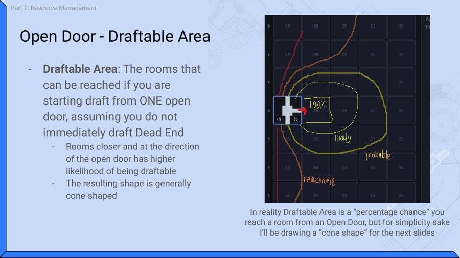
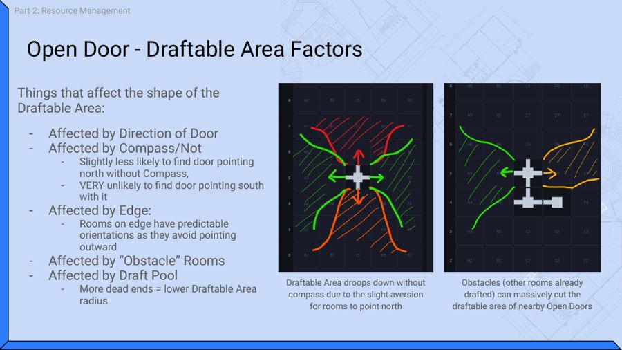
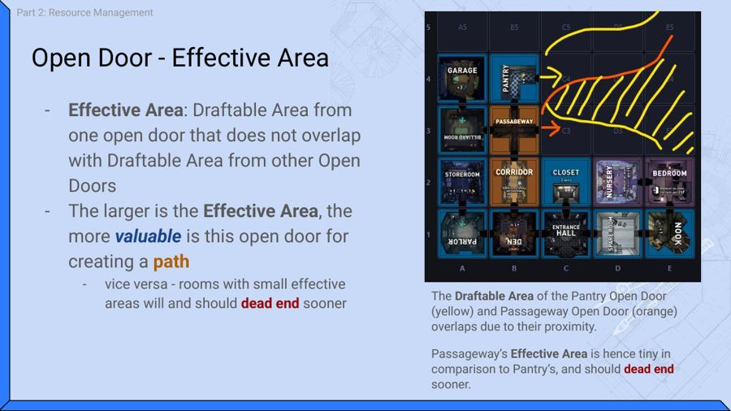
The spiral of dead ends
- Waste a door early → EDA drops for the rest of the day
- Lower EDA → fewer path options
- Fewer options → less likely to find the direction you want
- When you do find it, it often costs a wasted door
- → back to step 1
Wasting Commonplace doors hurts most, those rooms were coming anyway, and you spent their doors on nothing. Wasting a Rare's door barely registers. Wasting late barely registers either, because there are few drafts left to punish you.
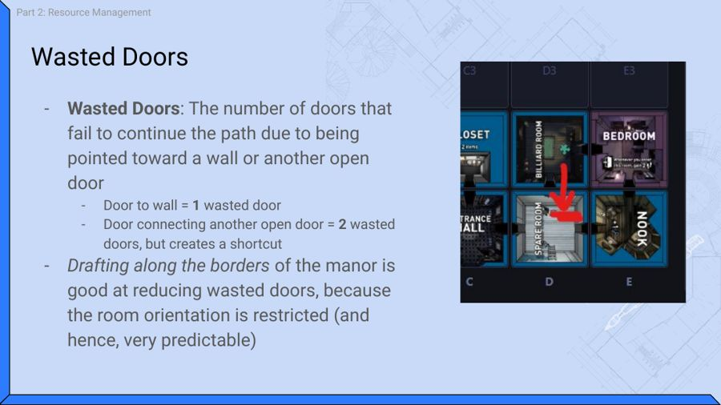
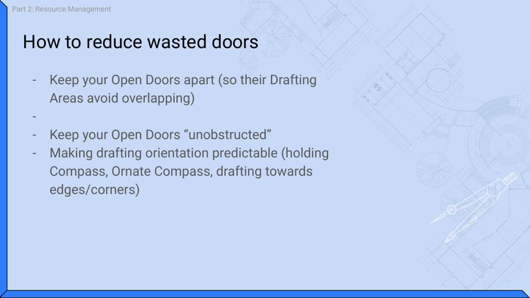
Chokepoints and dice
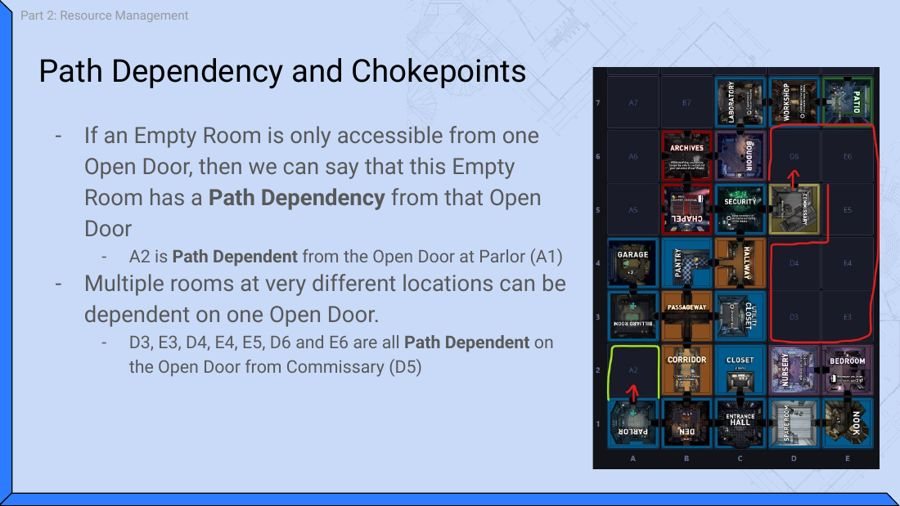
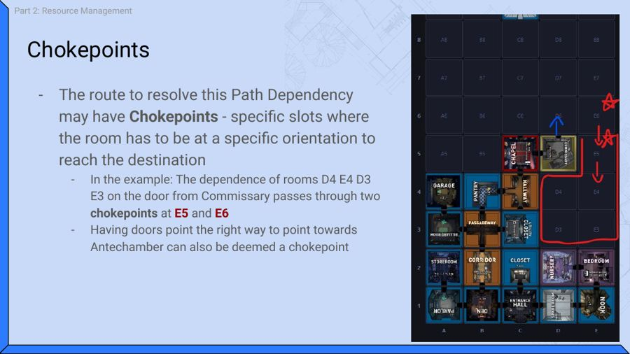
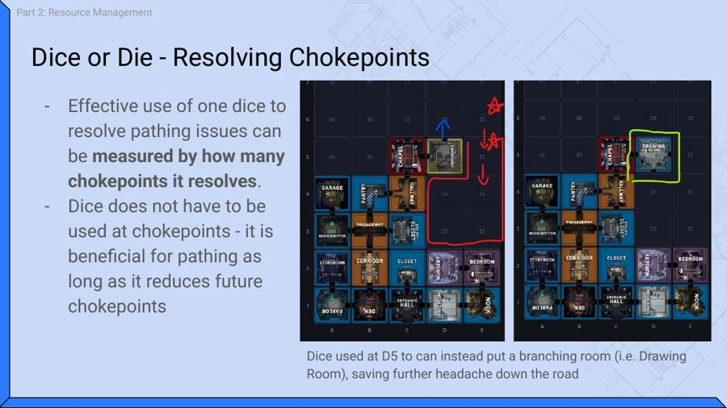
Ivory dice sources on Day One
- Naturally occurring pairs in rooms
- 1 die in the Closet
- Pair in a trunk, ~19.3%
- Burning Glass at the Tomb, 4 dice
- Trading Post trades, amount equal to tier
- Powered Laundry, swap keys into dice
- Boudoir or Guest Bedroom upgrades
- Non-dice rerolls: Study, Drawing Room, Classroom
Priorities by rank
| Stage | Priority order |
|---|---|
| Early | 1. Don't waste doors 2. Don't waste empty rooms 3. Find a path north 4. Avoid placing backtrack rooms |
| Mid | 1. Watch gem usage 2. Don't waste empty rooms 3. Find the Garage 4. Get Security access |
| Late | 1. Get goal rooms (Great Hall / Pool / Foundation) 2. Watch key usage 3. Find step generation (Kitchen, Dining Room, Lab) |
Backtracking
Travel costs 1 step per room. There and back costs twice. Entrance Hall → Passageway = 8 steps. Entrance Hall → Passageway → back to use open doors → Passageway again = 24.
- Finish what a room offers so you never return, or place it close to your branch.
- Bunch backtrack rooms together so one trip solves several goals.
- Place shops in later ranks unless you're already rich.
- Open early trunks when you have no hammer; speculate on later trunks, they're closer to your backtrack path.
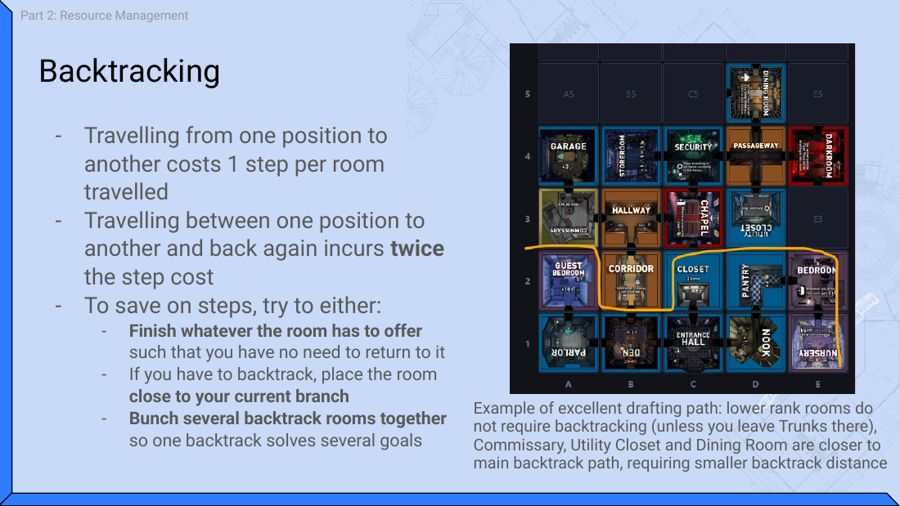
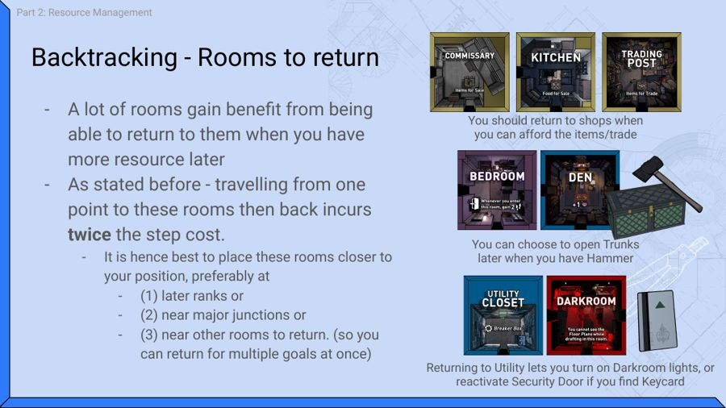
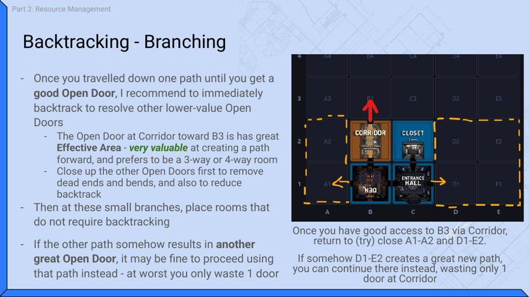
Reasons to backtrack, worth tracking: trunk at Den/Bedroom/Courtyard · shop items at Kitchen/Commissary/Trading Post · dinner at Dining Room · dig spots at green rooms and occasionally Storeroom/Tomb · items left at the Workshop · coin at the Pantry while fishing for the Coin Purse · unsolved dartboard while fishing for a Keycard. Also peek into nearby rooms to note which doors are Security doors.
Two items with special mention
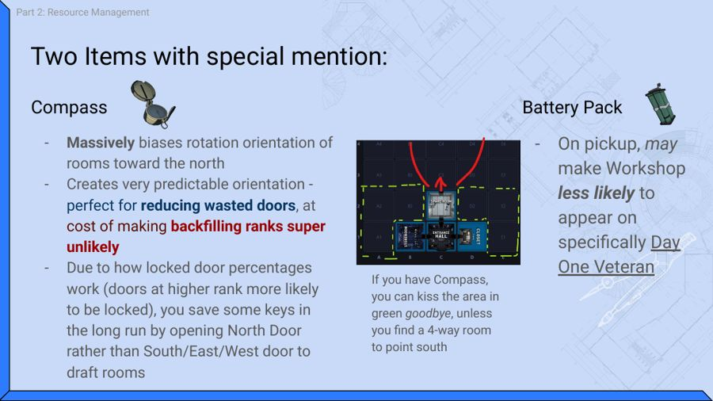
Compass
- Massively biases rotation north. Very predictable → great for reducing wasted doors.
- Cost: backfilling ranks becomes super unlikely. Kiss the area behind you goodbye unless you find a 4-way to point south.
- Because higher ranks are more likely to be locked, opening the North door saves keys long-term.
Battery Pack
- Picking it up may make the Workshop less likely, specifically on Day One Veteran, 50%.
- So be careful grabbing a Battery before you have the Workshop.
Intermission: the centre Closet
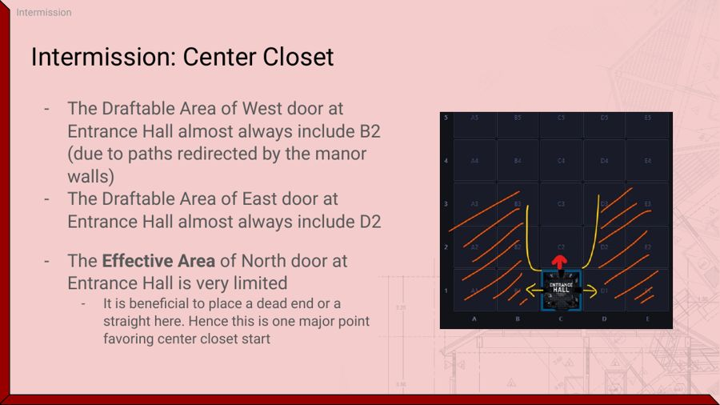
The Entrance Hall's west door almost always reaches B2, and its east door almost always reaches D2, the manor walls redirect the paths. But the north door's Effective Area is tiny. So put a dead end or a straight there. That's the case for the centre Closet opening.
There's a companion trick at B1/D1: because the game can't normally offer three dead ends, the Draftable Area of the west door to A1 always contains A2. So if you draft a 3-way at B1 or D1, explore the north door first, then you know whether B2 paths to A2. If it does, put a dead end at A1. If it doesn't, put a bend at A1 and reach A2 from there.
Economy
Gems, keys, steps, items
Gems
The pool is gem-negative by design. More rooms take than give.
At low gems
- Draft toward edges / corners / closed paths to place Dead Ends, they're very often gem-positive.
- Accept Red Rooms. Multi-door, no gem cost (except Aquarium). Ideal for carving a path with nothing.
- Keep one gem as far as possible.
- Skip Garage/Security if it keeps you above 0, even though they're good rooms.
Red Rooms, honestly
Friends when low on keys or gems. Fiends when high on both, they throw a wrench into a consistent gameplan. Many have Security doors: embrace or avoid depending on your access.
Keys
Keys are your room budget. Doors start locking at Rank 4. Higher ranks lock more.
At low keys
- Lean west wing to find the Garage.
- Avoid opening trunks with keys.
- Branch out, avoid open doors with small Effective Areas.
- At mid ranks (30–60% locked), point multiple open doors at the same empty slot. Wastes doors, buys more chances at an unlocked one.
- Have Security access? Prefer rooms that can have Security doors.
Key sources
Locksmith · Powered Furnace · Laundry · Servant's Quarters · Music Room · Locker Room · Walk-In Closet · Lockpick set · Metal Detector · lab experiment
Items
| Type | Examples | Implication |
|---|---|---|
| 1 · Single-use | Sledgehammer, Sleeping Mask, Shovel | Benefits from backtracking. Shapes where you place rooms. |
| 2 · Passive | Running Shoes, Lockpick, Metal Detector, Compass | Take on sight. |
| 3 · Special keys | Prism Key, Silver Key, Secret Garden Key | Behave more like keys than items. |
Item blocking, the rule that shapes shops
A room will not spawn a special item that already exists in the mansion or is used in a contraption. Have a Shovel from the Courtyard? You won't find one at the Commissary or Workshop.
- Items offered in Commissary/Trading Post don't count as existing, new rooms can still spawn them.
- Items traded away at Trading Post go back into the pool.
- Silver Key and Prism Key return to the pool once used. Secret Garden Key does not, it's single-use.
Item hoarding
- Workshop always spawns a contraption component. Draft it late to fish for your last Power Hammer piece.
- Commissary avoids spawning items you already have, use this to force it to sell gems.
- Trading Post, the more you hold, the more pinched its offer pool. Hoard; hoarding multiples of the same tier works exceptionally well.
- Billiard Room, solve the dartboard after you've fished for a Keycard, so the 20% Keycard doesn't default into 2 keys.
Commissary sets
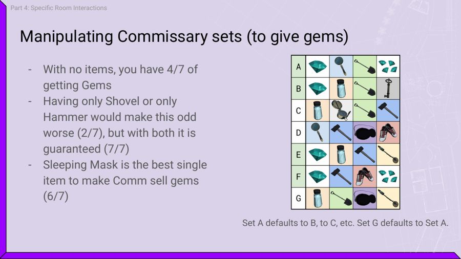
The Commissary offers 1 of 7 sets, and only if you have none of the items in it. Invalid → the next set down the list is chosen.
| You hold | Chance the set sells gems |
|---|---|
| Nothing | 4 / 7 |
| Only Shovel or only Hammer | 2 / 7 |
| Both Shovel and Hammer | 7 / 7, guaranteed |
| Sleeping Mask (best single item) | 6 / 7 |
Infinites
Nurse's Station infinite: Nurse's Station (free movement in a 10–11 step radius) + Powered Furnace (steps → keys) + Powered Laundry (keys → dice, gems, gold, steps) = infinite steps, gems, keys and dice. Slow, but infinite.
Others: Casino for infinite coins. Bedroom adjacent to another Bedroom, or to an opened Antechamber, for infinite steps.
Boiler Room dice laundering (allows Lab rerolling tech): Boiler Room → duct into a connector → from the connector, duct into edges to drop Lab / Laundry / Furnace → Lab-reroll to "set to 40 steps" with any good trigger → powered Lab to blackbridge into the Office for starting coin → print keys at the Furnace with your steps → trade keys into dice at the Laundry. Swap steps↔gems where useful.
Security doors
Rank 3 onward
From Rank 3, doors can be Security doors. They get more likely at higher ranks. You need a Keycard, or a Utility Closet + Security room.
| Setting | Limit | Extra effect |
|---|---|---|
| Low | 3 | - |
| Medium | 4 | - |
| High | 6 | Makes doors more likely to be Security |
The limit is where new rooms stop generating Security doors. It doesn't count doors made by the Closed Exhibit.
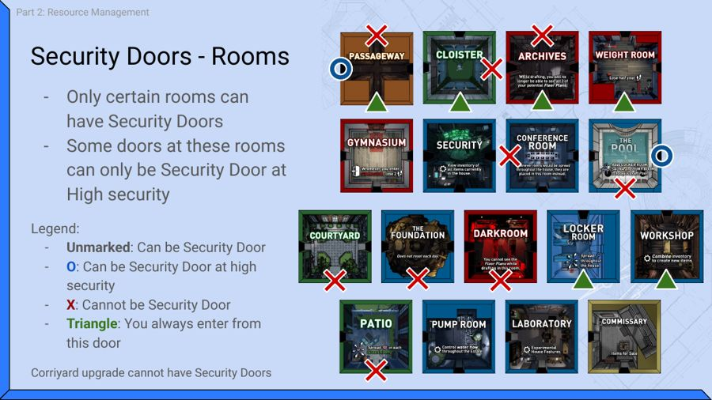
Playing around access
- Keycard's earliest sources: Closet, Guest Bedroom, Billiard Room, trunks.
- Miss all of those → draft Utility Closet and Security earlier.
- Down to one open door? Avoid 2-door rooms that can have Security doors, Workshop, Commissary, Lab, Patio at certain orientations. That's a run-ender.
- Have Security but no Utility Closet? Don't set High immediately.
Not entering rooms
- Room with a Security door you can't open → don't enter.
- Workshop with a Battery/Lever you can't use yet → don't enter.
- Garage drafted from the North door → the 3 keys' hitbox sits slightly outside; take them from the room to the south without entering. Saves 2 steps.
- Peeking is free intel: whether Office/Secret Garden spread coin or fruit; what the Commissary sells (from one door only).
Room reference
All 110 floorplans
Placement restrictions and every rarity mechanic here come from TFMurphy's datamining. Colour, gem cost and Base Rarity come from the wiki tables. Fields I could not source are left blank on purpose rather than guessed at.
Badges: W wiki T TFMurphy ? not sourced yet. An orange 1.7 style badge means that entry changed in that patch.
Art loads from assets/rooms/<Name>.png. Filenames match the wiki exactly, including the awkward ones: WalkinCloset.png, Lost&Found.png, HerLadyshipsChamber.png, ThePool.png, ServantsQuarters.png.
Outer rooms
The one draft that ignores the draft pool
West Path, across the bridge, one per day. All eight are Unusual, cost 0 gems, and are Dead Ends. No estate placement restriction applies, it's outside the blueprint.
| # | Room | Type | Why take it |
|---|---|---|---|
| 103 | Toolshed | Blueprint | 2 special items. Sledgehammer / Metal Detector most often; Shovel common; a Watering Can source. Immediate resource keeps runs alive. |
| 104 | Shelter | Blueprint | Negates the next 3 Red Rooms. Terminal + safe (1 gem inside). Best for Boiler Room strats, take Archives and Weight Room without punishment. |
| 105 | Schoolhouse | Blueprint | Adds 8 Classrooms to the pool. 35% filter on Classroom/Library/Dormitory. |
| 106 | Shrine | Blueprint | Blessings, 3+ days. |
| 107 | Root Cellar | Green | More dig points in manor rooms. |
| 108 | Hovel | Bedroom | For low-gem runs. Blue Flame gas valve. Notice of Termination. Denny's Room 46 notes. |
| 109 | Trading Post | Shop | Trades items for items. Key access. Mora Jai box. |
| 110 | Tomb | Blackprint | Immediate Underground Cartside. 5 gold per Dead End drafted. Dig spots. |
| Room | Pushed to | Base | Reduced | V-Mode or 46 |
|---|---|---|---|---|
| Tomb | slot 8 | 99% | 45% | 10% |
| Schoolhouse | slot 7 | 95% | 45% | 10% |
| Shrine | slot 6 | 60% | 30% | 10% |
What turns on Reduced Chances
| Condition | Applies to |
|---|---|
| 4th Outer Room draft onward | Shrine and Schoolhouse |
| Foundation Elevator crank pulled, plus 3+ Outer Room drafts | Tomb |
| Day 8 onward | All three |
| V Mode active (permanent effect) | All three |
| V Mode activated today, temporary | All three, at 10% for the rest of the day |
| Room 46 reached | All three, permanently at 10% |
The exact ordering algorithm
All 8 in a list, manipulated in this order. You see slots 1–3; a redraw advances to the next three, cyclically. Positions 9–16 repeat 1–8, useful with Archives.
- Shuffle uniformly. One room picked at random at a time until all 8 are placed, no bias.
- Rare Room Penalty. Tomb, then Schoolhouse, then Shrine each roll to be shoved to the back. See the chart above for the three rate tiers.
- First time ever drafting an Outer Room: Root Cellar, Toolshed, Hovel forced to slots 1–3. Disabled if it's day 1 and V-Mode came from fast drafting.
- Whatever you drafted last time: if it's in the front three, shoved to slot 4.
- Colour filters, each moving its room to slot 1, applied in this sequence: Violet moves Hovel, Green moves Root Cellar, Yellow moves Trading Post. All three active leaves you looking at Trading Post, Root Cellar, Hovel. A Greenhouse activates Green, so it actively pushes Root Cellar at you.
- Blue Color Filter active, 50/50 between two branches:
- Branch A: Toolshed, Shelter, Shrine to slots 1, 2, 3. Then a 50% chance Schoolhouse jumps to slot 1.
- Branch B: Shrine, Shelter, Schoolhouse to slots 1, 2, 3. Then a 50% chance Toolshed jumps to slot 1.
- Draxus active, or Blackprints common → Tomb to slot 1.
Blessing of the Monk inserts its room at position 3, displacing what was there to the redraw. The monked room never reappears on redraws.
Monk / Berry, dragging manor rooms outside
- Monk or Berry let you draft any grounds room out here, including Antechamber, Foundation, Room 46, Entrance Hall.
- They keep every property except one: they become Dead Ends.
- Non-permanent rooms pulled this way are removed from the main pool for the day.
- Not reversible: already drafted your only copy inside? You can still take it outside, the Outer Room acts as if a second unused copy exists.
- Room 8: Monk + call it a day in Room 8 → draftable as an Outer Room next day, no Key 8 needed. Never in the pool, so Monk never removes it.
West Path notes
- Access via the Garage door, or unlatch the West Gate from inside, permanent once opened.
- Cost from the Entrance Hall at day start: 4 steps round trip, 6 if you enter.
- Redraw effects work out here. Pool-modifying effects (Pool, Repellent) do nothing.
- Wall-clipping: rooms on the west wing south of the Garage can be used through the wall, two Locker Room lockers, the Throne Room's Antechamber lever, the buttons behind the Closed Exhibit. Closed Exhibit placed directly south of the Garage → run back in for the crown without the timer extension. The Boiler Room elevator can be lowered, but it clips you through the floor and costs the day.
Rotation
Which way it'll face
Decided after the room is chosen. Ignores every modifier except the Compass and its upgrades. Only L- and T-shapes rotate.
- Rooms never rotate to face the outside edge unless unavoidable.
- Some rooms are hard-locked to one direction.
- Boiler Room counts as a corner room, one of its doors can't be drafted from.
"Default" = Room 46 reached, or day 1–2. Other columns are pre-46 only. Drafting from the East → use the West tables, mirrored.
At a glance
Line brightness is the probability of that exit configuration. The compass rows are what the Compass does to the same case.
Raw tables
3-way from South
| Compass | Default | Day 3–20 | Day 21+ | |
|---|---|---|---|---|
| ╦ | 0% | 70% | 64% | 60% |
| ╣ / ╠ | 50% | 15% | 18% | 20% |
3-way from West
| Compass | Default | Day 3+ | |
|---|---|---|---|
| ╦ | 5% | 55% | 50% |
| ╣ | 47.5% | 35% | 38% |
| ╩ | 47.5% | 10% | 12% |
2-way from West
| Compass | Default | Day 3+ | |
|---|---|---|---|
| ╗ | 10% | 57% | 55% |
| ╝ | 90% | 43% | 45% |
Fixed, unmodifiable
| Case | Odds |
|---|---|
| 3-way from North → ╩ | 40% |
| 3-way from North → each other | 30% |
| 2-way from North/South | 50 / 50 |
Placement rules
Why that room won't go there
| Room | Restriction |
|---|---|
| Garage | West wing A4–A8, no West Retreat. North or West facing. |
| Greenhouse | East Advance or West Retreat, not at E2. Needs an external window on its right. Dead End until you Power Hammer the weak wall. |
| Boiler Room | No edge pierce, no East Retreat, no West Advance, no rank 1, no rank 9. Must be drafted from the two doors not split by the bridge. |
| Secret Passage | No rank 1, no rank 9, cannot point to corners. |
| Veranda | East or West, Advance or Retreat. |
| Terrace | West/East pierce. |
| The Foundation | Centre tile, rank 3+, not at C8. Cannot come from a Silver Key. |
| Mechanarium | Centre tiles only, counts as a 4-way. Needs Underground Gear access to enter the pool. |
| Security | First on a save must be drafted from its centre door. |
| Her Ladyship's Chamber | West side, South facing. Re-added to the pool when Burning Glass opens Lady Epsen's tomb. |
| Master Bedroom | West side only. |
| Morning Room | Cannot rotate. One exit always on the right. Needs an external window opposite the entrance. |
| Secret Garden | Outside wall, West or East wing. Never a corner. |
| 4-exit rooms | Never on the edge. Includes Chamber of Mirrors. |
| 3-exit rooms | Never in a corner, except via the Secret Passage bug, or Prism drafting. The third exit renders as a blocked door. |
Directions: North = up, toward Room 46. South = down. West = left. East = right. None of this applies to the Outer Room.
Mora Jai boxes
Tile rules, then the answers
3×3 grid, four corner buttons. Get the realm's colour into all four corners, then press the sigils. Pressing corners on a wrong state resets, that's your undo.
Tile rules
| Tile | On press |
|---|---|
| Grey | Nothing. |
| White | Flips itself and orthogonal neighbours between white and grey. No adjacent greys → it goes grey. |
| Yellow | Swaps with the tile above. Top row → nothing. |
| Purple / Violet | Swaps with the tile below. Bottom row → nothing. |
| Green | Swaps with its 180° mirror through centre. Centre → nothing. |
| Pink | Rotates all 8 surrounding tiles one step clockwise. |
| Orange | Becomes the majority colour of orthogonal neighbours. Tie → nothing. |
| Black | Shifts its whole row one right. |
| Red | All white → black, all black → red. Destructive; last resort. |
| Blue | Copies the centre tile's ability. |
Arch Aries · yellow Corarica · orange Eraja · violet Fenn Aries · red Mora Jai · white Orinda Aries · black Verra · pink Nuance · green
Aries Court has 8 boxes, the Rough Draft has 46, those hold notes, not tokens, and don't stay solved. Master Bedroom and the Solarium studio addition are the only rooms where you can farm multiple tokens.
Solutions
Same layout as the sheet: the number in a cell is the press that lands there. Press 1, then 2, then 3, across the whole grid. Several numbers in one cell = press it on each of those turns.
Tools & upgrade disks
Where the permanent stuff lives
Tool → target
| Tool | Targets |
|---|---|
| Burning Glass | Torch in Box Tunnel · Chapel · Freezer · Tomb · Trading Post · Abandoned Mine · Apple Orchard |
| Power Hammer | Greenhouse · Weight Room · Secret Garden · Chess Room · Sealed Tunnel · Freezer · Box Tunnel |
| Shovel | Conservatory · Lost & Found · Microchip · Archive Keys |
| Hammer | Microchip |
| Magnifying glass | Stamps · Studio Safe |
Keys → cabinets
| Key | Opens |
|---|---|
| Patio | Archives bottom |
| Laundry | Archives top |
| Box Tunnel | Underground Office |
Room → contents
| Room | What's in it |
|---|---|
| Closed Exhibit | Study safe |
| Mechanarium | Lower Underpass gear · 5th / 6th / 8th door |
| Lost & Found | 2 rare items · dig spot basement · lose 1 random item on entry |
| Treasure Trove | Boiler red box · gear puzzle |
| Conservatory | Dig spot by white trees, between stones |
| Tunnel | Requires light · always draws Tunnel while drafting here |
| Throne Room | Powered lab · shovel and sledge · 3 microchips |
Upgrade disk locations
| Room | Requirement |
|---|---|
| Freezer | Power Hammer or Burning Glass |
| Office | Opportunity to earn and spread |
| The Foundation | Bottom of elevator |
| Her Ladyship's Chamber | Next time you enter Boudoir gain 10; next time Walk-in Closet gain 3 |
| Commissary | Items for sale |
| Garage | Car keys |
| Great Hall | Always in a corner |
| Morning Room | Tomorrow you start with 2 |
| Vault | Key 304 |
| Archives | Requires Patio cabinet key |
| Tomb | Room by cart · Burning Glass |
| Trading Post | Chance trading rare items · Burning Glass |
| Lost & Found | Always one of the items, not worth taking |
| Mechanarium | 6th door · 3rd diagonal |
Allowance tokens
Mora Jai boxes: Master Bedroom · Closed Exhibit · Underpass Gear · Tomb · Trading Post · Tunnel (Rank 9) · Solarium · Lost and Found · Throne Room · Aries Court · Atelier Path
Coins: Cloister · Vault ×4 · Quest BR · Room 8 · Reservoir · Experiments · Entrance Monk
Trading Post tiers
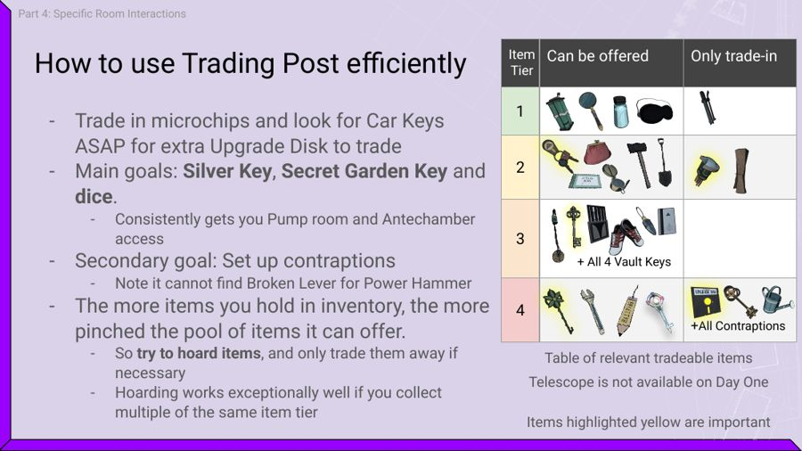
Shrine blessings
Donate gold, 3+ days
| Blessing | Gold | Effect |
|---|---|---|
| Dancer | 1 | - |
| High Roller | 3 | Dice. |
| Gardener | 5 | - |
| Chef | 7 | - |
| General | 9 | - |
| Tinkerer | 11 | Drafting any Mechanical Room triggers the current experiment. |
| Monk | 13 | Draft any grounds room as an Outer Room, at position 3. Removes it from the pool for the day. |
| Berry Picker | 15 | Own West Path draft pool. No duct draws. Runs a hidden round → sets the runback filter. |
+16 gold per day sustains the top of the ladder. Day 4: Chef and Tinkerer are swapped.
Bingo
Steering the pool toward many objectives
The levers, ranked
- Duct draws. Uniform across 13 rooms, rarity ignored. Activated Boiler Room → 70% first, 30% after, 3 per draft. The best Rare engine in the game.
- Shrink the pool. The gate marks small decks then picks uniformly among them. Library, Prism Key, Secret Passage, corner drafting, many redraws.
- Library for Foundation / Study / Attic, the only consistent way, ~50:50 Unusual/Rare. Remember it gives free rooms only at 0 gems.
- Silver Key on an edge for 3-ways and the Pool. Hold 4+ gems or it prefers gemless.
- Secret Passage, free gem room in slot 1, and a filter wipe so the next draft starts clean.
- Burn two free drafts to unlock the gem path.
Reading the board mid-draft
- A room you don't own two of, shown twice → that rarity's deck is depleted. Stop redrawing.
- An unexplained Closet → attempt 4 fired. Nothing passed filters.
- Early Utility Closet / Garage / Billiard → V-Mode is on.
- Two dead ends + a gem room walling you in → validation's Any Draw crossing both groups. Expected.
Archives, reading the hidden room
Ways to identify what the Archives is hiding:
- Gem cost is visible.
- Security door opened with a Keycard reveals the stated rarity.
- Normal draws are sorted by gem cost, then stated rarity.
- Active steam power → blue line if the room has a duct.
- Outer room positions 9–16 repeat 1–8.
- The three rooms can't normally all be dead ends.
- Furnace heat appears and stays once a red room is drawn.
Objective checklist
Estate titles
| Title | Requirement |
|---|---|
| East facing | ≥6 East rooms · ≤2 West |
| West facing | ≥6 West rooms · ≤2 East |
| Compact | 25–26 rooms |
| Respectable | 29–30 rooms |
| Grand | 31–32 rooms |
MAX target, neither east nor west
5 Red · 2 Green · 4 Cog · 3 Drafting · 2 Puzzle · 3 Tomorrow
Music / Ballroom / Sports
Conference / Office / Mail
HLC / Obs / Parlor / WWH
Case studies
"What would duck do?"
1 · Corridor over anything, don't waste doors early
Answer: Corridor. A Corridor gives no resource, but saving doors in the pool is the resource. Wasting one early means more dead ends in every one of the 30+ remaining drafts. Approach Day One expecting to draft every Common eventually, so take the one that keeps the path open.
2 · Billiard Room over Commissary at rank 1
Answer: Billiard Room. Not Commissary, no gold, and it'd sit far from the backtrack path. Not Bedroom, that benefits from being near backtrack routes, and you want to fish for Hammers first. Once the dart is solved the Billiard Room can be ignored, so parking it at rank 1 is fine.
3 · Don't skip the first Garage
Answer: Garage. Rule of thumb, never skip the first Garage offered. It has a 90% bonus appearance rate until first shown, then the offer expires. It's crucial for reaching the Outer Room, and 3 keys for 1 gem is good on its own.
4 · At B1/D1, explore the north door first
Answer: the North door to B2. Because the game can't normally offer three dead ends, the Draftable Area of the west door to A1 always contains A2. So check north first: if B2 paths to A2, put a dead end at A1. If not, put a bend at A1 and reach A2 from there.
5 · Normal key or Silver Key at a locked Chapel door?
Answer: Silver Key. Silver doesn't consume the Garage forced draw (unlike SGK), so you can still find the Garage at A7/A8. Garage at A6 isn't bad, but a 3-way is better, it gets you two more rooms. And holding 4+ gems with enough gem 3-ways already drafted (Aquarium, Courtyard, Security), you're likely to find the Pool, which is what the Silver Key is for.
6 · Secret Passage into greens on an East edge
Answer: Secret Passage → green. Advancing on the East edge, green Secret Passage has two different high rolls: a free Veranda, or a Morning Room without needing to buy Bacon from the Kitchen.
7 · Which Outer Room, with Power Hammer already?
Answer: Tomb. Power Hammer already gives Gearside. Antechamber is very likely via Weight Room (Power Hammer + Furnace). So what's missing is Cartside, and with no Silver Key or dice, Tomb is the answer. Trading Post is second (could trade into Silver Key). Shrine is a surprising third, on Berry Picker.
8 · At Underground Gear with the Power Hammer, what before you leave?
Answer: pick up Mechanarium, and leave the gear on this setting. You still need Cartside and Antechamber; Mechanarium solves both, since the 6th door gives a Silver Key for finding the Pool. Picking up Mechanarium is objectively good play in most games. Leaving the gear set correctly lets you reach the Inner Sanctum directly from Cartside.
9 · When to reroll instead of taking a room
Answer: reroll. With Tomb and a lowered Foundation you already hold both Underground sides. What you want is a route to the Secret Garden Key (Locksmith / Music Room), Great Hall, or Workshop. Pool gives no branch and Pump Room has no value here, skip both.
10 · Open the trunk now, or wait for a Hammer?
Answer: open now. No coin to buy a Hammer at the Commissary means no good likelihood of finding one soon. The trunk offers real outs, 2 keys, 3 keys, 2 dice, Lockpick, Keycard. And the Nook is far enough that returning later with a Hammer is too expensive step-wise, especially with no early Nursery or Sleeping Mask.
Room 46
You made it
Reaching it once permanently changes the engine: the gem deck gate locks to 5/5/4/4, rotation reverts to the Default column, the Trophy Room unblocks, and your next draft hands you a Gift Shop in Slot 1 whether you want one or not.
Gaps
Unverified and conflicting, in one place